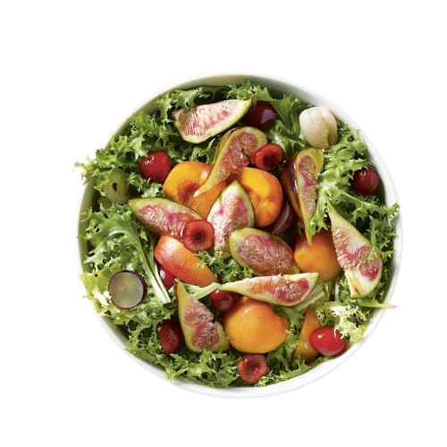

SOPAS Y ENSALADAS MENÚ

×
La Sopa Samboms es un plato típico de la gastronomía panameña que se suele servir como entrada en los restaurantes y hogares de ese país. Esta sopa es un caldo espeso y sustancioso que se elabora con ingredientes como ñame, yuca, plátano verde, pescado, camarones, cebolla, ajo, perejil y otros condimentos. Sopa Samboms $45 |
La Sopa Samboms es un plato típico de la gastronomía panameña que se suele servir como entrada en los restaurantes y hogares de ese país. Esta sopa es un caldo espeso y sustancioso que se elabora con ingredientes como ñame, yuca, plátano verde, pescado, camarones, cebolla, ajo, perejil y otros condimentos. | 
×
La Sopa con Guacamole es un platillo originario de la cocina mexicana que combina una sopa de pollo o de tomate con una porción de guacamole fresco y cremoso. La sopa se elabora con ingredientes como tomates frescos, chiles, cebolla, ajo, caldo de pollo y especias, y se sirve caliente. Sopa con Guacamole $55 |
La Sopa con Guacamole es un platillo originario de la cocina mexicana que combina una sopa de pollo o de tomate con una porción de guacamole fresco y cremoso. La sopa se elabora con ingredientes como tomates frescos, chiles, cebolla, ajo, caldo de pollo y especias, y se sirve caliente. |

×
La Sopa de Fideos es un plato sencillo y reconfortante que se encuentra en la mayoría de las cocinas de todo el mundo. Se trata de un caldo suave y saborizado que se prepara con fideos y otros ingredientes como verduras, pollo, carne, pescado o mariscos. Sopa de Fideos $50 |
La Sopa de Fideos es un plato sencillo y reconfortante que se encuentra en la mayoría de las cocinas de todo el mundo. Se trata de un caldo suave y saborizado que se prepara con fideos y otros ingredientes como verduras, pollo, carne, pescado o mariscos. | 
×
La Sopa de Verduras es un platillo nutritivo y reconfortante que se prepara a partir de diferentes tipos de vegetales. Se trata de un plato muy versátil que puede incluir una amplia variedad de verduras, como zanahorias, cebolla, apio, calabacín, brócoli, pimientos, espinacas y tomates. Sopa con Verduras $59 |
La Sopa de Verduras es un platillo nutritivo y reconfortante que se prepara a partir de diferentes tipos de vegetales. Se trata de un plato muy versátil que puede incluir una amplia variedad de verduras, como zanahorias, cebolla, apio, calabacín, brócoli, pimientos, espinacas y tomates. |

×
El Caldo de Camarón es un plato típico de la cocina mexicana que se elabora a partir de camarones frescos y otros ingredientes como chile, ajo, cebolla y cilantro. Es un caldo rico y sabroso que se puede servir como plato principal o como acompañamiento de otros platillos. Caldo de Camarones $89 |
El Caldo de Camarón es un plato típico de la cocina mexicana que se elabora a partir de camarones frescos y otros ingredientes como chile, ajo, cebolla y cilantro. Es un caldo rico y sabroso que se puede servir como plato principal o como acompañamiento de otros platillos. |
×
La Sopa Fría es un platillo refrescante y ligero que se sirve frío en lugar de caliente. Es una opción ideal para los días calurosos de verano, ya que proporciona un alivio refrescante en el calor. Se puede preparar con una amplia variedad de ingredientes, pero los más comunes son las frutas y las verduras. Sopa Fria $39 |
La Sopa Fría es un platillo refrescante y ligero que se sirve frío en lugar de caliente. Es una opción ideal para los días calurosos de verano, ya que proporciona un alivio refrescante en el calor. Se puede preparar con una amplia variedad de ingredientes, pero los más comunes son las frutas y las verduras. |

×
La ensalada primavera típicamente incluye ingredientes como lechuga, espinacas, rúcula, pepino, tomate cherry, zanahorias, espárragos, aguacate, fresas y nueces. Se puede utilizar cualquier combinación de ingredientes según las preferencias del cocinero y la disponibilidad de los productos frescos de temporada. Ensalada Primavera $55 |
La ensalada primavera típicamente incluye ingredientes como lechuga, espinacas, rúcula, pepino, tomate cherry, zanahorias, espárragos, aguacate, fresas y nueces. Se puede utilizar cualquier combinación de ingredientes según las preferencias del cocinero y la disponibilidad de los productos frescos de temporada. | 
×
La ensalada de lechuga es una de las ensaladas más simples y comunes que se preparan en todo el mundo. Es una ensalada clásica que se prepara con hojas de lechuga fresca y se adereza con una variedad de ingredientes y aliños para darle sabor y textura. Ensalada de Lechuga $35 |
La ensalada de lechuga es una de las ensaladas más simples y comunes que se preparan en todo el mundo. Es una ensalada clásica que se prepara con hojas de lechuga fresca y se adereza con una variedad de ingredientes y aliños para darle sabor y textura. |

×
La ensalada de pollo es una ensalada fría y sustanciosa que se prepara con pollo cocido y una variedad de ingredientes frescos y sabrosos. Es una ensalada muy versátil que se puede adaptar a diferentes gustos y preferencias, según los ingredientes disponibles y las preferencias personales. Ensalada de Pollo $69 |
La ensalada de pollo es una ensalada fría y sustanciosa que se prepara con pollo cocido y una variedad de ingredientes frescos y sabrosos. Es una ensalada muy versátil que se puede adaptar a diferentes gustos y preferencias, según los ingredientes disponibles y las preferencias personales. | 
×
La ensalada mixta puede incluir una variedad de ingredientes, como lechuga, espinacas, rúcula, tomates, pepinos, cebollas, zanahorias, pimientos, aguacate, brotes de alfalfa, entre otros. También se pueden agregar ingredientes adicionales, como nueces, queso, huevos duros, pollo asado o cualquier otra proteína. Ensalada Mixta $59 |
La ensalada mixta puede incluir una variedad de ingredientes, como lechuga, espinacas, rúcula, tomates, pepinos, cebollas, zanahorias, pimientos, aguacate, brotes de alfalfa, entre otros. También se pueden agregar ingredientes adicionales, como nueces, queso, huevos duros, pollo asado o cualquier otra proteína. |

×
La ensalada clásica es una ensalada simple y tradicional que se prepara con lechuga, tomate y cebolla. Es una ensalada muy popular y fácil de preparar, que se puede personalizar con diferentes ingredientes y aderezos, según los gustos y preferencias personales. Ensalada Clásica $46 |
La ensalada clásica es una ensalada simple y tradicional que se prepara con lechuga, tomate y cebolla. Es una ensalada muy popular y fácil de preparar, que se puede personalizar con diferentes ingredientes y aderezos, según los gustos y preferencias personales. | 
×
La ensalada inglesa, también conocida como ensalada de pepino y crema agria, es una ensalada clásica británica que se prepara con pepinos, cebolla y una crema agria aromatizada con hierbas y vinagre. Ensalada Inglesa $66 |
La ensalada inglesa, también conocida como ensalada de pepino y crema agria, es una ensalada clásica británica que se prepara con pepinos, cebolla y una crema agria aromatizada con hierbas y vinagre. |